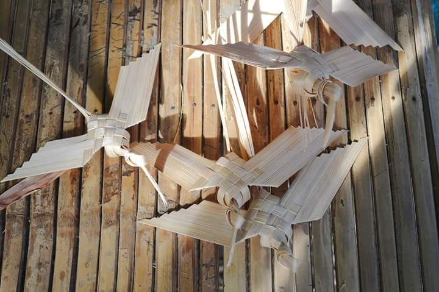

Bamboo
For generations, they have been crafting practical articles for the house and farm, and they do this not only to augment their income from agriculture. For most of them, it is a way of life.
Their skills and creativity have produced baskets,
bigao (winnowing tray), anduyan (baby cribs or hammocks), walkers, bookshelves, cabinets, bangkito (stool) and other items peddled by viajero (itinerant vendors) manning the cattle caravans of yore.
The caravans, which used to travel all the way to Metro Manila, were composed of ox-pulled carts that, naturally, were made of bamboo.
The caravans are dead, no thanks to cheaper plastic products that replaced bamboo crafts. Also, the caravans' rest and grazing areas in Metro Manila had been taken over by road expansions, shopping malls and other developments.
But the "romance" between San Carlos residents and the bamboo turned into a booming furniture industry in the 1980s and the manufacture of bahay kubo (nipa hut), commonly used as garden centerpieces, in the 1990s.
Councilor Elpidio Fermin Jr. says some residents continue making bigao and baskets but the production of bamboo furniture and bahay kubo has helped earn San Carlos a spot among the country's destinations for native furniture. The city has been mounting the Mango-Bamboo Festival every April as thanksgiving and to highlight San Carlos' major products.
Most residents in the 71 rural villages in the city are engaged in bamboo industry, Fermin says. San Carlos has 86 villages, 15 of which are classified as urbanized.
In the village of Palaming, Jennifer Resuello, 31, never stopped building bahay kubo since he was 14.
Resuello says he was trained by his stepfather, Julian Benitez, and his uncle, Lito Casto, who he said were among the artisans who started the bahay kubo industry in the city.
Resuello says he, working alone, can finish a 6 x 12-meter bahay kubo, regardless of design, in two weeks. He is paid P6,000 by a "kapitalista" (investor) who provides the bamboo, coconut lumber and plastic net used to cover the thatched roof.
The first bahay kubo that came out of the city were those meant for gardens and landscaping projects. But the design has since evolved
into bigger and sophisticated structures-some fitted with a sink, and feature partitions for living areas, kitchen or a bedroom. Others have maintained the rustic and bare bahay kubo that serves as a rest area or a shed.
Several bahay kubo, in various designs, are displayed in a corner of the San Carlos City plaza, although a permanent display center is already being set up in the city proper, Fermin says.
A 3 x 3-m hut costs P30,000 while the 6 x 12-m variety sells for P50,000. Also on display in the city plaza are living room furniture sets sold for a minimum of P1,200, depending on the design and number of pieces, and beds sold for a minimum of P1,000, also depending on size.
Some traders buy in bulk and bring the furniture to Metro Manila. Fermin says these businessmen improve on the design, treat these with antitermite chemicals and sell them at higher prices.
He says San Carlos' bamboo furniture and bahay kubo have been copied by traders from other Pangasinan towns and those from other provinces.
"Our skilled workers had been 'imported' by businessmen from other places who started their own ventures. But I saw many bamboo-based businesses in other areas fold, possibly because they did not have the craftsmanship which workers from San Carlos have developed through the years," he says.
Bamboo used to abound in San Carlos, which is crisscrossed by
50 km of rivers and creeks. But large areas of the city's riverbanks have been occupied by the growing number of residents who cut down bamboo and harvest shoots.
The remaining bamboo patches here could no longer sustain the industry, so local manufacturers have to buy raw materials from other towns and provinces, Fermin says.